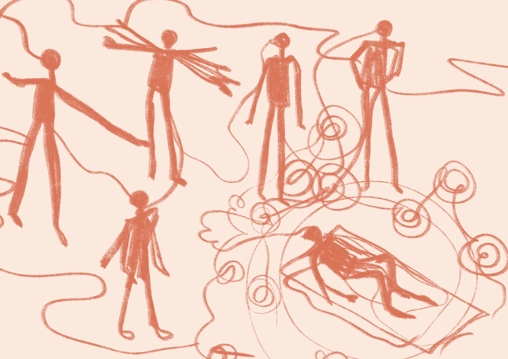
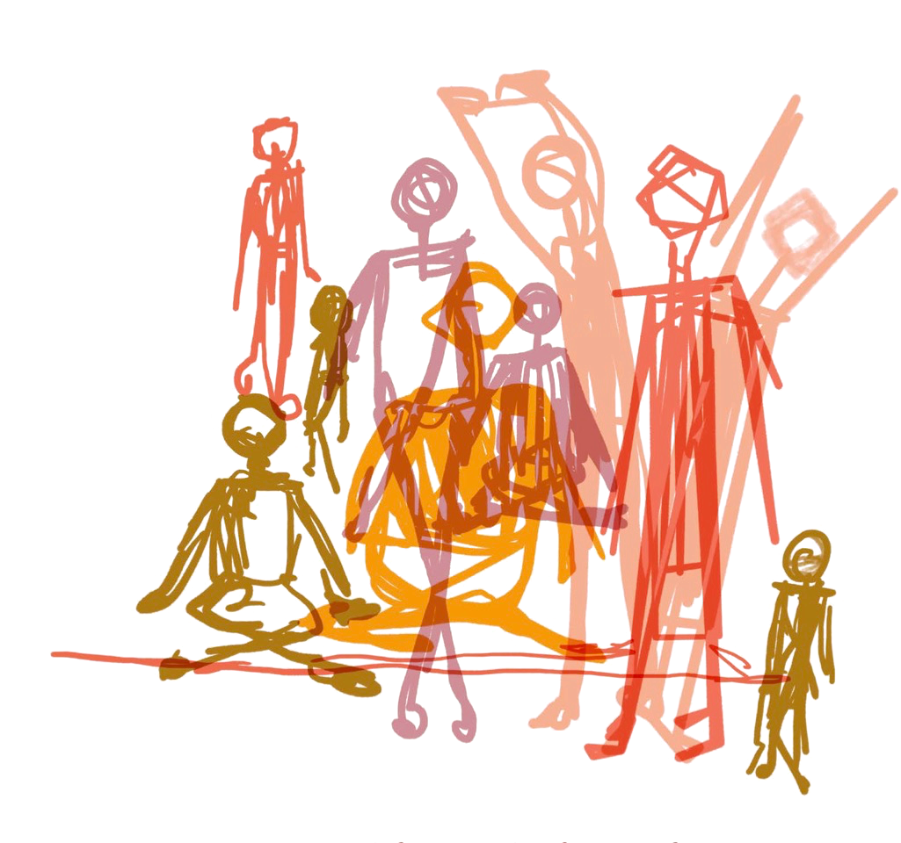
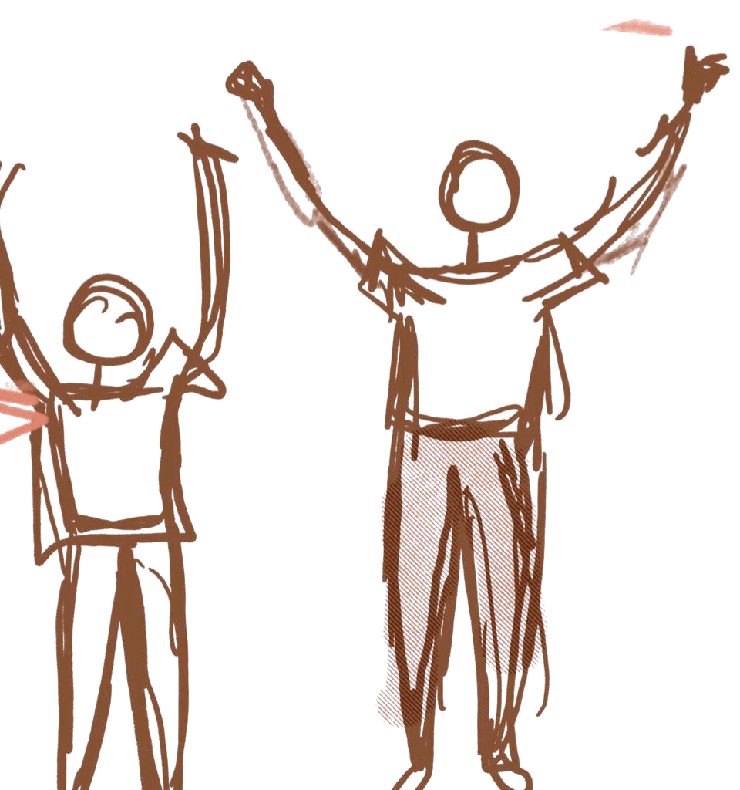
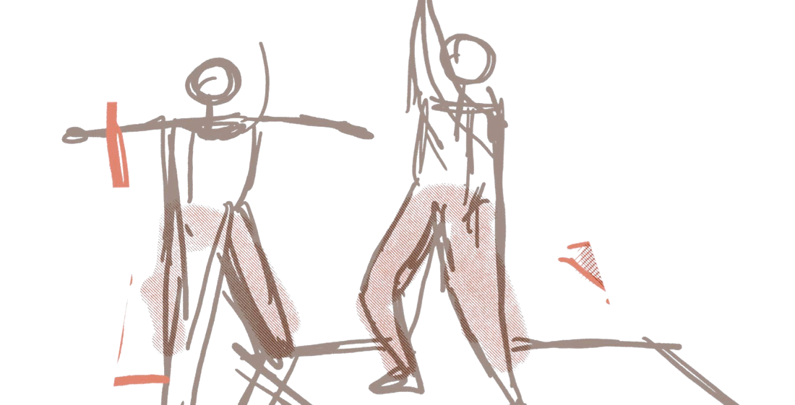
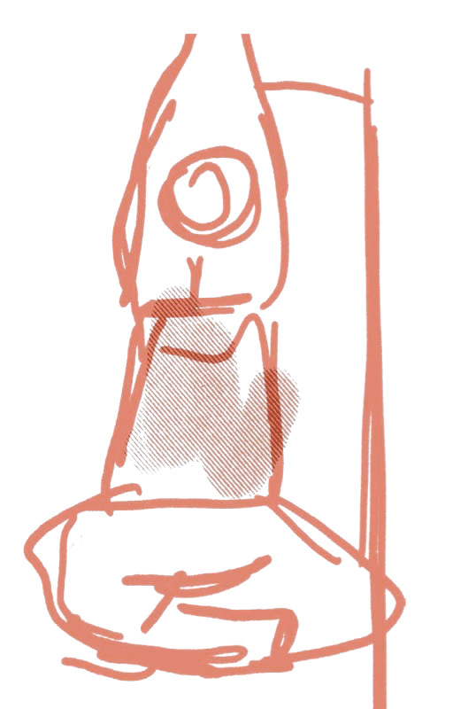
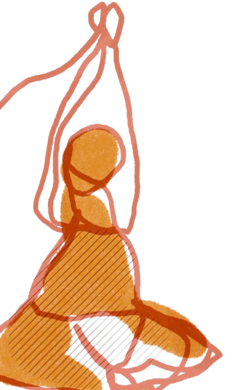

Moving
Well
a manifesto
A research project about accessing movement & exercise.
Intro
Moving Well is a UKRI funded project that aims to understand the barriers, facilitators, and lived experience of trans and non-binary people accessing movement and exercise.
We asked older (50+) TNBI (trans, non-binary, intersex) people to attend movement sessions, followed by a reflective talking session.
Learnings
We found that while movement can support confidence, independence, wellbeing, and quality of life, for older trans people, feeling comfortable and welcome in spaces that offer movement is central to accessing exercise.
Our recommendations are based on conversations with older trans and non-binary people who took part in the Moving Well sessions.

Confidence, independence, wellbeing, & quality of life.
Make spaces feel safe & predictable
Previous experiences of discrimination in places like toilets and changing rooms create uncertainty around what to expect in spaces for movement. Having information about spaces beforehand and being welcomed by educated staff and exercise leaders is a facilitator for accessing movement.

“It also takes out a lot of the unpredictability […] before you even arrive.”
Recommendations
- Make toilets and changing arrangements clear before people arrive.
- Provide gender-neutral or private changing options wherever possible.
- Give people information beforehand about where to go, what the space looks like and what will happen in the session.
- Make inclusion visible through signage, images and language.
- Train staff and movement leaders to be welcoming without making someone’s trans identity the focus.
- Consider quieter, smaller or less crowded sessions where possible.
- Offer live online options alongside face-to-face activities.
- A list of safe, accessible spaces for TNBI people.
Encourage people move in ways that works for their own bodies
Movement can bring up complex feelings around gender, ageing, strength, and body changes. Some movements may feel uncomfortable or dysphoria-inducing, while other movements can help people reconnect with their bodies.

“For me, that feels really tricky because that’s an area of massive dysphoria […] that’s gonna make me feel less confident”
Recommendations
- Avoid assuming that everyone will be comfortable with the same movements or ways of positioning their body – give alternatives.
- Don’t assume that older people only want gentle or restorative exercise – consult beforehand.
- Focus on what a movement feels like and does for the individual, rather than whether it looks “right or wrong”.
- Avoid creating pressure to perform movements in a particular gendered way.

Make movement meaningful & personalised
People were not necessarily motivated by “moving for the sake of exercise”. Gardening, walking, practical tasks and being outdoors made movement enjoyable. Personalised goals and movement education could also help with motivation.

“I don’t like to be one of those people that’s moving for the sake of exercise. I would far rather be doing something like, oh, okay, I’ve got to lift that bag of bark chippings.”
“It would have a reason. You do have a reason for doing that, a purpose to do it.”
Recommendations
- Build movement into activities with a purpose or outcome – for example gardening, walking, creating, carrying, building or caring for a space.
- Offer outdoor and nature-based activities where possible.
- Connect movement to people’s own goals, such as managing pain, maintaining strength or staying independent to maintain motivation.
- Consider simple visual goals, progress markers or rewards for people who find these motivating.
Movement is connected to confidence & quality of life
Participants described movement linked to mood, confidence, social connection, mobility and being able to continue doing everyday activities that matter to them.
“For me, quality of life is being able to go out and about and walk my dog and get up out of the seat [...] so movement for me is really important.”
“If there’s a group of people that you can go with [...] that definitely kind of makes things more accessible.”
Recommendations
- Create opportunities to attend with a buddy or peer sessions.
- Make activities accessible to people who prefer to exercise alone, online or in smaller groups.
- Recognise that pain, reduced strength and changes associated with ageing may affect how people participate.
- Tailor activities around maintaining everyday quality of life.
Movement takes many forms.
The illustrations in this manifesto were sketched alongside the sessions, from standing and stretching to lying down and listening. Here, a sound bath takes shape line by line.
Time-lapse drawing: sound bath